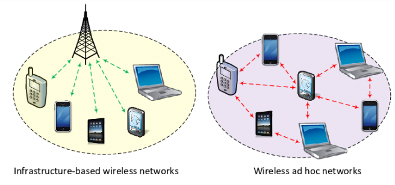
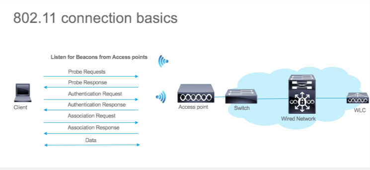
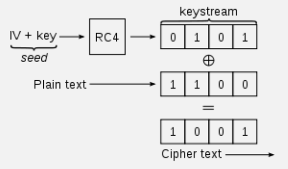
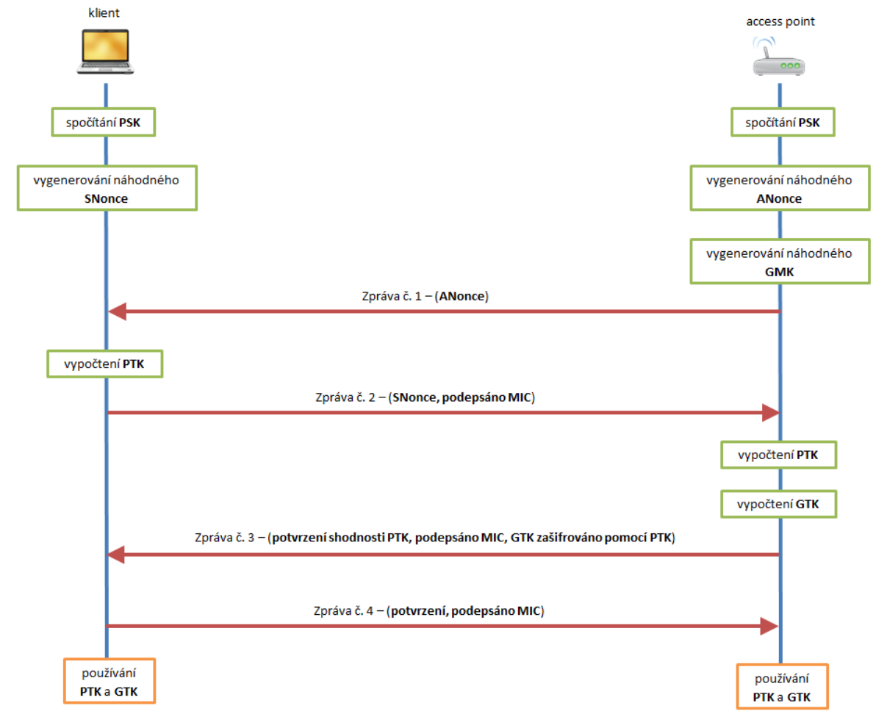
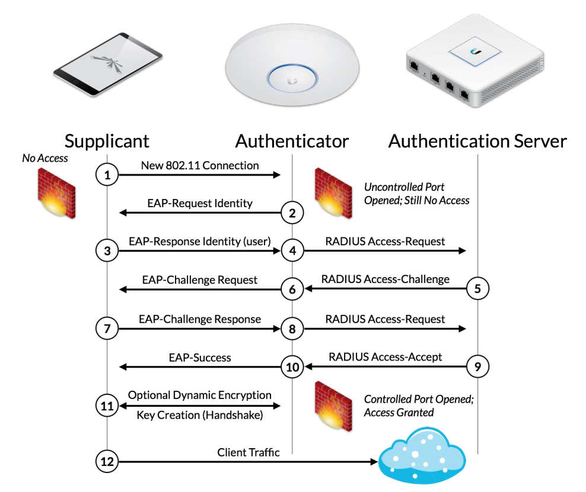

Bezpečnosť vo WiFi
Čo je to WiFi?
- WiFi je počítačová sieť, ktorá používa na prenos dát elektromagnetické rádiové vlny, najčastejšie vo frekvenčnom pásme 2,4 GHz alebo 5 GHz.
- Z hľadiska bezpečnosti je WiFi veľmi podobná bežnému rádiu.
- Každý môže zachytiť to, čo stanica vysiela.
- Signál sa dá rušiť.
- Signál sa dá aj sfalšovať alebo prehlušiť iným zmysluplným signálom.
Režimy spojenia vo WiFi
- Infraštruktúrny režim – v sieti sa nachádza jeden centrálny bod, teda access point alebo WiFi router, ktorý riadi komunikáciu a overuje prístup do siete.
- Zariadenia v infraštruktúrnom režime nekomunikujú priamo medzi sebou, ale cez centrálny bod.
- Ad-hoc režim – zariadenia medzi sebou komunikujú priamo v režime peer-to-peer.

Ako sa začína WiFi komunikácia?
Probe request a probe response
- Probe request – klient, teda WiFi station, vysiela do okolia na všetkých kanáloch informáciu o svojich podporovaných parametroch spojenia a zisťuje, aké access pointy sú dostupné.
- Probe response – access point odpovedá klientovi a oznamuje mu svoje podporované rýchlosti, zabezpečenia, SSID, MAC adresu (BSSID) a ďalšie parametre.
Authentication request a authentication response
- Authentication request – klient si vyberie access point, s ktorým chce komunikovať, a pošle mu žiadosť o nadviazanie spojenia.
- Authentication response – access point potvrdí, že chce s klientom komunikovať, alebo spojenie zamietne, napríklad ak je klientova MAC adresa v zozname nedôveryhodných.
- Pri zamietnutí môže access point odoslať správu Deauthentication response.
Association request a association response
- Association request – klient odošle žiadosť, v ktorej uvádza metódu šifrovania a overovací kľúč.
- Association response – ak klient splnil podmienky na pripojenie, access point ho pridá do zoznamu klientov, s ktorými môže komunikovať.

Metódy overenia
- Bez overenia a bez šifrovania – Opened network.
- So spoločným kľúčom – pre-shared key (PSK).
- WEP
- WPA
- WPA2
- WPA3
- Podnikové overenie cez centrálny RADIUS server.
- Overenie menom a heslom.
- Overenie MAC adresou.
- Overenie certifikátom.
WEP – Wired Equivalent Privacy
- WEP bol prvý bezpečnostný algoritmus pre WiFi a objavil sa v roku 1997.
- Jeho cieľom bolo zabezpečiť aspoň podobnú úroveň ochrany dát ako v klasickej drôtovej sieti.
- Používal kľúč pevnej dĺžky 40 bitov alebo 104 bitov.
- Šifrovanie prebiehalo pomocou prúdovej šifry RC4.
- Kontrola integrity dát sa robila pomocou CRC-32 a hodnoty ICV.
- Slabinou WEP bol krátky 24-bitový inicializačný vektor IV, ktorý sa opakoval približne každých 5000 až 10000 paketov.
- Spätnou analýzou zachytených paketov bolo možné zrekonštruovať šifrovací kľúč a získať heslo do siete.
- Na prelomenie WEP sa dá použiť napríklad nástroj Aircrack-ng.

WPA – WiFi Protected Access
- WPA vzniklo po odhalení slabín WEP ako novšia a bezpečnejšia metóda ochrany WiFi siete.
- Na starších zariadeniach ho bolo možné zaviesť aj zmenou firmvéru v routri alebo access pointe.
- Aj WPA používalo RC4, ale s dôležitým vylepšením nazývaným TKIP (Temporal Key Integrity Protocol).
- Na overovanie integrity sa využíval mechanizmus Message Integrity Check.
WPA – TKIP
- Pri WEP sa šifrovací kľúč tvoril jednoduchým spojením IV a hesla, čo bolo slabé.
- TKIP zaviedol dočasné kľúče platné len pre jeden prenesený paket.
- Tieto kľúče sa skladajú z hlavného kľúča, MAC adresy príjemcu a poradového čísla rámca.
- Ako hlavný kľúč sa nepoužíva priamo heslo do siete, ale hash vytvorený z hesla a náhodného čísla.
WPA – MICHAEL
- MICHAEL je systém na kontrolu neporušenosti paketov prenášaných cez sieť WPA.
- WPA stále používa CRC-32, ale pridáva k nemu aj zašifrovaný MIC (Message Integrity Check).
- MIC funguje podobne ako elektronický podpis rámca.
- Ak sa útočník pokúsi pozmeniť paket viac ako raz počas 60 sekúnd, šifrovací systém sa zresetuje a vygeneruje sa nový základ kľúča.
- Aj napriek tomu sa WPA dá prelomiť do niekoľkých hodín, pri slovníkovom hesle aj oveľa rýchlejšie.
WPA2
- WPA2 sa stalo povinným štandardom v zariadeniach vyrábaných od roku 2006.
- Prestalo používať prúdovú šifru RC4 a začalo využívať blokovú šifru AES.
- Na zvýšenie bezpečnosti integrity správ sa použil algoritmus CCMP.
- Dohadovanie šifrovacieho kľúča pre AES prebieha pomocou 4-way handshake.
WPA2 – 4-way handshake
- Pred prenosom dát si access point a klient musia dohodnúť viacero kľúčov, napríklad PTK pre unicast a GTK pre multicast a broadcast prenosy.
- Na vytvorenie kľúčov potrebujú PSK, náhodné číslo AP (ANonce), náhodné číslo klienta (SNonce), MAC adresu AP a MAC adresu klienta.
- Access point najprv pošle klientovi ANonce.
- Klient následne pošle access pointu SNonce spolu s MIC.
- Potom access point vytvorí GTK, zašifruje ho pomocou PTK a odošle ho klientovi.
- Klient správu overí, uloží si GTK a potvrdí úspešné dohodnutie kľúča.
- V súčasnosti sa odporúča používať aspoň WPA2 s kontrolou CCMP.

WPA3
- WPA3 je najnovší štandard platný od roku 2018.
- Na šifrovanie používa tiež AES, ale dĺžka kľúča sa zvýšila zo 128 bitov na 192 bitov.
- Na overovanie integrity sa už nepoužíva CCMP, ale novší algoritmus GCMP.
- Namiesto 4-way handshake používa algoritmus SAE, ktorý je odolný proti offline útokom.
Ďalšie vlastnosti WPA3
- Forward secrecy – zachytenú komunikáciu nie je možné spätne dešifrovať, pretože kľúče sa generujú pre každé spojenie zvlášť.
- Opportunistic Wireless Encryption (OWE) – aj otvorená sieť môže mať šifrovanú komunikáciu medzi AP a klientom bez spoločného vstupného hesla.
- Device Provisioning Protocol (DPP) – zariadenia je možné pripojiť do siete napríklad naskenovaním QR kódu alebo pomocou NFC.
Možnosti zabezpečenia domácej WiFi
- Zmeniť predvolené heslo do administračnej sekcie routra, prípadne aj login.
- Používať najvyššiu podporovanú overovaciu metódu, ideálne WPA2 alebo WPA3, s dostatočne dlhým kľúčom.
- Vypnúť vysielanie SSID.
- Vytvoriť zoznam dôveryhodných zariadení pomocou MAC filtering.
Overovanie v podnikovej sfére
- V podnikoch je potrebná vyššia úroveň zabezpečenia, pretože treba evidovať, kto, kedy a s akým zariadením sa pokúšal pripojiť do siete.
- Tento spôsob overovania je popísaný v štandarde 802.1x.
- Využíva sa nielen vo WLAN, ale aj v klasickej drôtovej LAN sieti.
- Princíp spočíva v zavedení centrálneho bodu v sieti, ktorý obsahuje údaje o používateľoch, overuje ich a oznamuje access pointu alebo switchu, či sa klient môže pripojiť.
Tri typy zariadení v 802.1x
- Žiadateľ (supplicant) – počítač alebo zariadenie, ktoré sa chce pripojiť do siete.
- Autentizátor (authenticator) – switch alebo access point, na ktorý sa klient pripája.
- Autentizačný server (authentication server) – server, ktorý komunikuje s autentizátorom pomocou RADIUS alebo TACACS a overuje totožnosť používateľa.

Priebeh komunikácie cez EAP
- Žiadateľ sa chce pripojiť do siete a access point mu pošle výzvu na identifikáciu.
- Access point povolí len komunikáciu medzi klientom a serverom.
- Žiadateľ odošle identifikačné údaje cez access point na server.
- Server zistí, či sa používateľ nachádza v databáze, a následne vyžiada overenie identity.
- Žiadateľ odošle heslo alebo certifikát.
- Autentizačný server overí identitu a v prípade úspechu povolí klientovi vstup do siete.
Možné spôsoby overenia
- EAP-MD5 – používa meno a heslo, ale dnes sa už neodporúča pre nízku bezpečnosť.
- EAP-TLS – klient aj server sa overujú certifikátom; je veľmi bezpečný, ale aj náročný na správu.
- EAP-TTLS – server sa overuje certifikátom, klientovi stačí heslo.
- EAP-PEAP – funguje podobne ako TTLS a ide o implementáciu Microsoftu.
- Z bezpečnostného hľadiska sa najčastejšie využívajú EAP-TTLS a EAP-PEAP.
Možné útoky vo WiFi sieti
Neoprávnený vstup do siete
- Password cracking – útočník sa snaží prelomiť heslo a získať prístup do siete.
- Identity theft – útočník si nastaví MAC adresu povoleného zariadenia a vydáva sa za neho.
Denial of Service
- Rušenie – útočník vysiela na rovnakej frekvencii ako access point a tým znemožní používateľom pripojenie.
- Deautentifikačný útok – útočník pošle access pointu rámec so zdrojovou adresou obete a AP klienta odpojí.
- CTS flood – útočník zneužije správu CTS a zabráni ostatným klientom vo vysielaní dát.
Man In The Middle
- ARP spoofing – útočník zmení ARP záznam obete tak, že k IP adrese routra priradí svoju MAC adresu a zachytáva prenášané dáta.
- DHCP spoofing – útočník vyradí legitímny DHCP server a začne sám prideľovať klientom adresy, pričom sa nastaví ako default gateway.
- Rogue AP – útočník vytvorí otvorenú sieť s rovnakým SSID ako legitímny access point a pomocou silnejšieho signálu alebo deautentifikačného útoku prinúti obeť pripojiť sa k nemu.